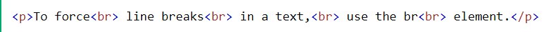
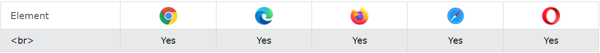

Sauts de ligne simple dans un texte :
Définition et utilisation :
La < br> balise insère un seul saut de ligne.
La < br> balise est utile pour écrire des adresses ou des poèmes.
La < br> balise est une balise vide, ce qui signifie qu’elle n’a pas de balise de fin.
Remarque : utilisez la < br> balise pour saisir des sauts de ligne, et non pour ajouter de
l'espace entre les paragraphes.
Prise en charge :
Attribut globaux :
La < br> balise prend également en charge les attributs globaux en HTML.
Attributs d'événement :
La < br> balise prend également en charge les attributs d'événement en HTML.
Exemples :
Utilisez < br> dans un poème :
Css default :
-none-